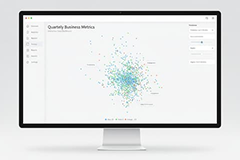

ClimArS (Em migração...)
Voltaremos ao normal em: 80:00:00
Nosso Objetivo
Entender a dinâmica de fatores ambientais e internações por problemas respiratórios (CID-10).
Ferramenta de apoio à decisão para profissionais de saúde e gestão do SUS.
Fornecer visualização, predições e insights técnicos para pesquisadores e cidadãos.
Nossas Fontes de Dados
🏥
Dados de Saúde
Internações extraídas do SIH/DATASUS.
🌤️
Dados Meteorológicos
Variáveis coletadas de 273 estações do INMET.
🏭
Dados de Poluição
Informações disponibilizadas pelo IEMA.
Explore Nossas Ferramentas
